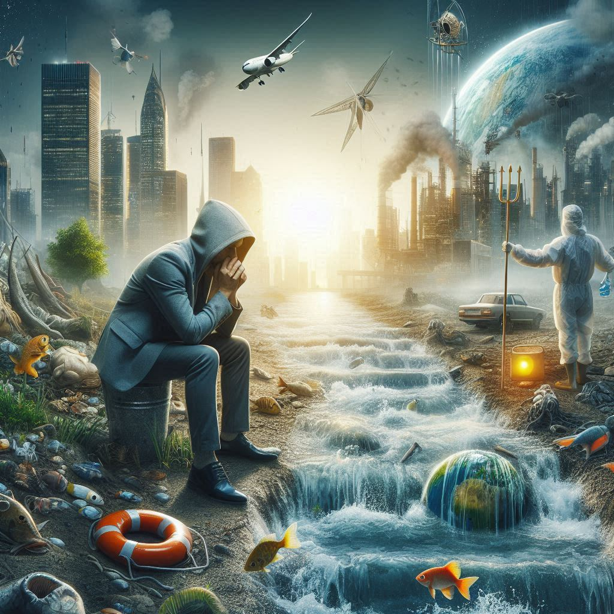
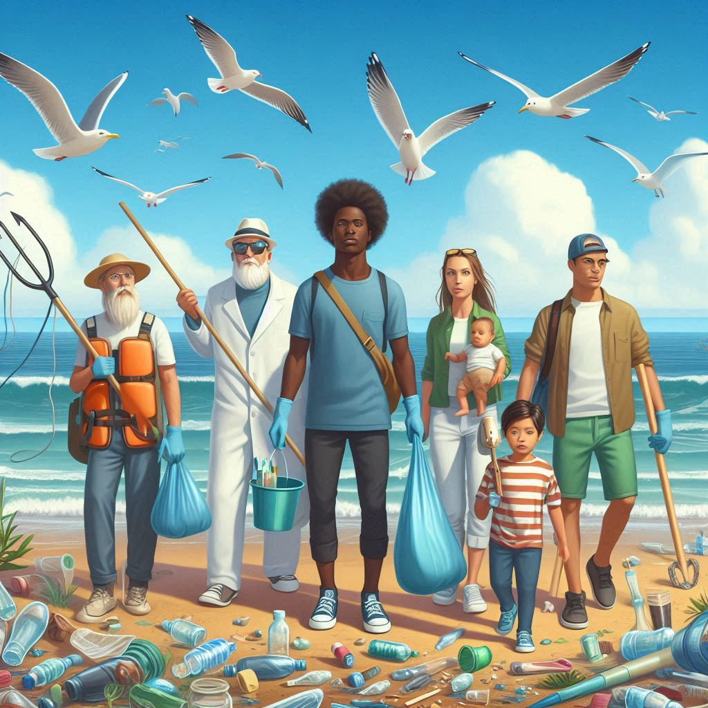
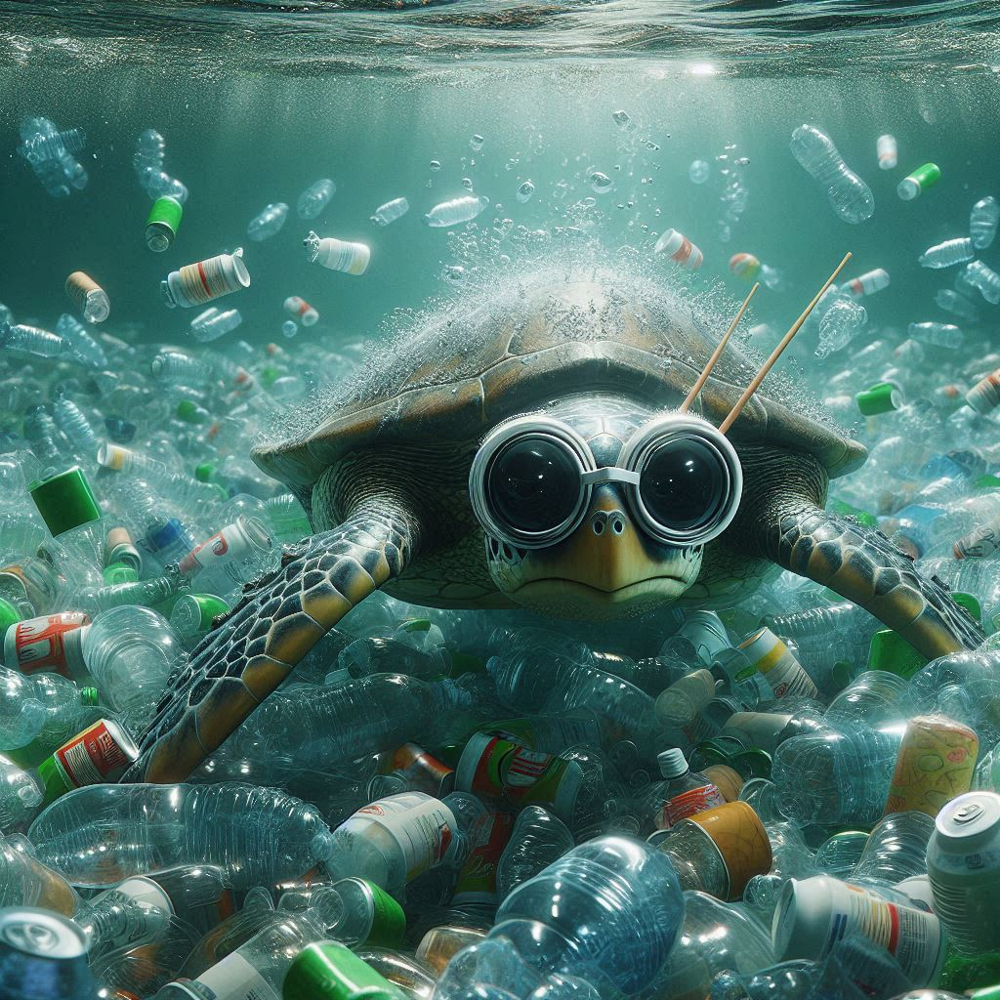

Quais são os principais desafios da poluição aquática?

A poluição aquática é um problema global, causado por resíduos plásticos, escoamento agrícola e efluentes industriais. Afeta ecossistemas e saúde humana, exigindo redução de plásticos, melhor gestão de resíduos e tratamento eficiente de efluentes.
Resíduos plásticos persistem no ambiente, ameaçam a vida marinha e entram na cadeia alimentar. Nutrientes e produtos químicos tóxicos prejudicam a biodiversidade aquática.
Como o Spy Turtle ajuda a combater a poluição aquática e promover a sustentabilidade dos ecossistemas?
O Spy Turtle é um dispositivo multifuncional inovador para combater a poluição aquática e promover a sustentabilidade dos ecossistemas aquáticos. Ele monitora a qualidade da água em tempo real.
Equipado com sensores avançados, o Spy Turtle coleta resíduos sólidos flutuantes e transmite dados para uma plataforma central. Promove educação ambiental e capacitação.
Quais são os objetivos principais do dispositivo Spy Turtle?
Monitorar a qualidade da água em tempo real e reduzir a poluição sólida coletando resíduos flutuantes. Melhorar a saúde dos ecossistemas aquáticos.
Fornecer dados para pesquisa, promover educação ambiental, e capacitar comunidades locais. Facilitar a mitigação e incentivar práticas sustentáveis.
Quais são os principais grupos impactados pelo dispositivo Spy Turtle?

Além disso, comunidades costeiras, ONGs e grupos de voluntários podem usar seus dados para campanhas de conscientização e ações de limpeza.
O Spy Turtle afeta diretamente as autoridades governamentais responsáveis pela gestão ambiental e regulamentação.
Quais são os benefícios oferecidos pelo dispositivo Spy Turtle para o ambiente aquático e as comunidades locais?

O Spy Turtle monitora a qualidade da água e recolhe resíduos, protegendo os ecossistemas aquáticos.
Sua presença promove a conscientização e práticas sustentáveis, facilitando a gestão eficaz dos recursos hídricos.
Como o Spy Turtle pode impactar positivamente a vida diária das pessoas em comunidades próximas a corpos d'água?
O Spy Turtle oferece um monitoramento preciso da qualidade da água em tempo real. Isso auxilia as comunidades na tomada de decisões para garantir recursos hídricos seguros e saudáveis.
Coletando resíduos flutuantes o Spy Turtle torna os ambientes aquáticos mais limpos e seguros para atividades recreativas e econômicas, beneficiando diretamente a vida diária das pessoas.
Cadastre seu e-mail e fique por dentro das novidades!